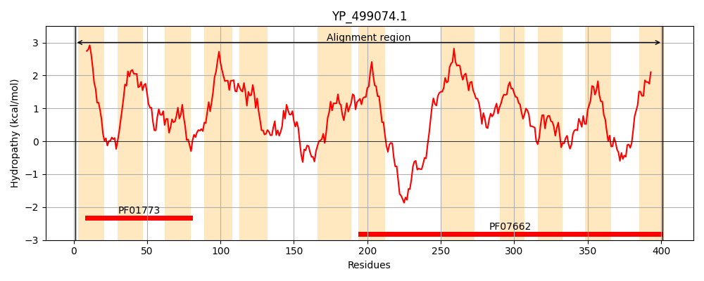
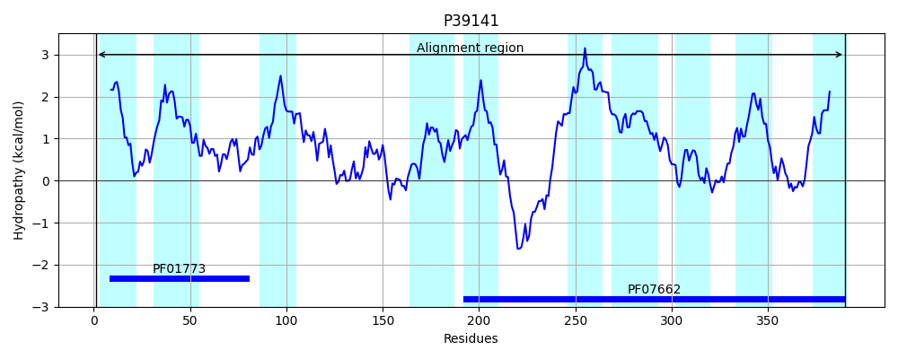
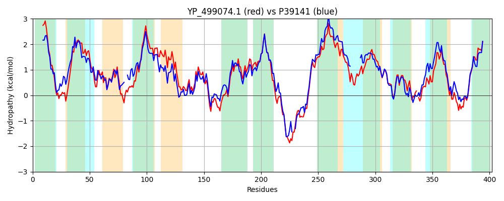

Hit Accession: P39141
Hit TCID: 2.A.41.1.2
Hit Description: gnl|BL_ORD_ID|10240 gnl|TC-DB|P39141|2.A.41.1.2 PYRIMIDINE NUCLEOSIDE TRANSPORT PROTEIN - Bacillus subtilis.
Mach Len: 402
e:0.000000
Query TMS Count : 12
Hit TMS Count: 10
TMS-Overlap Score: 7.000000
Predicted Substrates:CHEBI:5584;hydron, CHEBI:8675;pyrimidine
BLAST Alignment:
Score: 1239 , Bit scores: 481 bits, E-value: 1.8e-170, Alignment length: 402, Percentage identity: 63
Query: 1 MHILIGIIGIIFFLALAFLFSSDRKNIRWKYVGILLAIQLIFAFILLKTTMGIKVIGGISNGFNYLLLKAADGVNFVFGGIQYIDPKQPPFFFSVLLPIVFISAIIGILQYTKILPLIINVLGFLISKINGMGRLESYNAVAAAILGQSEVFISIKKQLPYIPKQRLYTLTASAMSTVSASIIGAYFTLIEPKYVVTAVVLNLFGGFIIASIINPYKVNEEDDKLLVEETEERQQSFFEMLGEYILDGFKVAVIVGAMLIGYIAIIALLNGIVSNIFSTVSGGAISWDFQTLIGFVFAPFAFLVGVPWQDAVQAGSVMATKLLSNEFVAMQALGKLS-DLSEHAKGVTSVFLVSFANFSSIGIISGAIKSLNDKKGDTVARFGLKLLFGATLVSFISAAIAG 401
M LIGIIG+I FL LA++ SS +K I+ + + ++L +Q I +ILL T +G ++GG + GF YLL AA+G+NFVFGG+ ++ Q FF +VLLPIVFISA+IGILQ K+LP II +G +SK+NGMGRLESYNAVA+AILGQSEVFIS+KK+L + +QRLYTL ASAMSTVS SI+GAY T+++P+YVVTA+VLNLFGGFIIASIINPY+V +E+D L VE EE +QSFFE+LGEYILDGFKVAV+V AMLIG++AIIAL+NGI + +F FQ ++G+VFAPFAFLVG+PW +AV AGS+MATK++SNEFVAM +L + S + SVFLVSFANFSSIGII+GA+K LN+K+G+ VARFGLKLL+GATLVSF+SAAI G
Sbjct: 1 MKYLIGIIGLIVFLGLAWIASSGKKRIKIRPIVVMLILQFILGYILLNTGIGNFLVGGFAKGFGYLLEYAAEGINFVFGGL--VNADQTTFFMNVLLPIVFISALIGILQKWKVLPFIIRYIGLALSKVNGMGRLESYNAVASAILGQSEVFISLKKELGLLNQQRLYTLCASAMSTVSMSIVGAYMTMLKPEYVVTALVLNLFGGFIIASIINPYEVAKEEDMLRVE--EEEKQSFFEVLGEYILDGFKVAVVVAAMLIGFVAIIALINGIFNAVFGI--------SFQGILGYVFAPFAFLVGIPWNEAVNAGSIMATKMVSNEFVAMTSLTQNGFHFSGRTTAIVSVFLVSFANFSSIGIIAGAVKGLNEKQGNVVARFGLKLLYGATLVSFLSAAIVG 390 | Protein Hydropathy Plots: |
|---|
|  |  |
Pairwise Alignment-Hydropathy Plot:
|
|---|
|  |